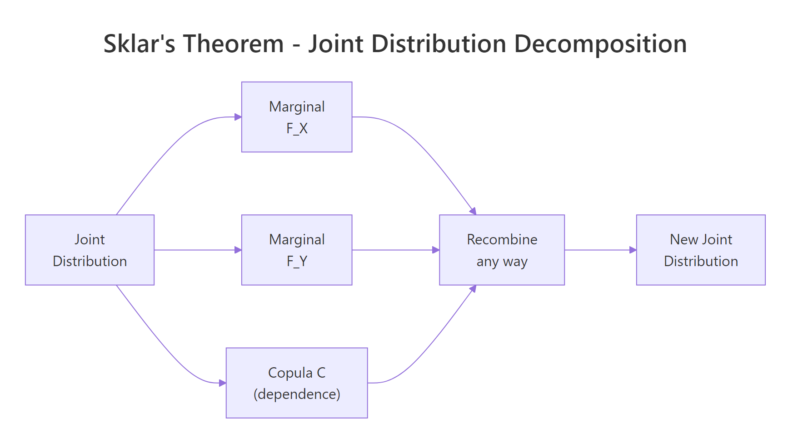
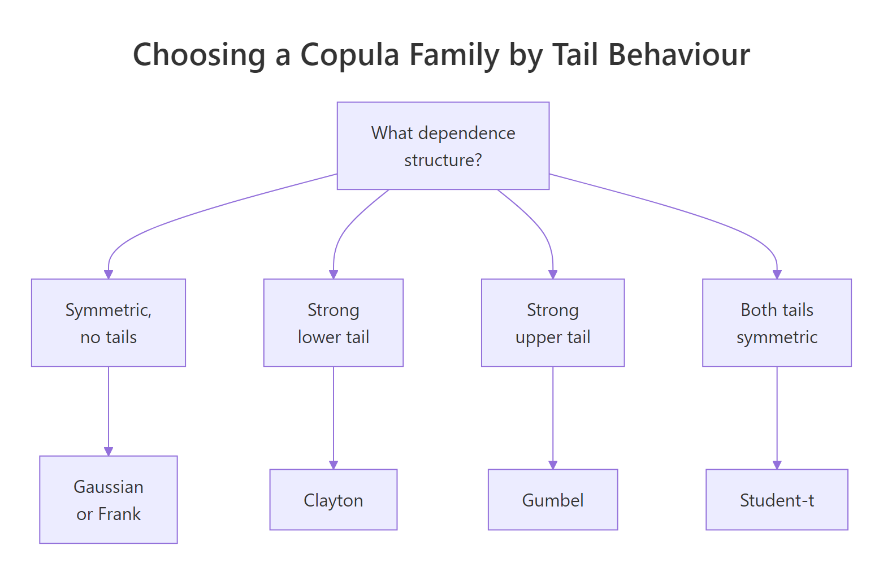

Copulas in R: Model Multivariate Dependence Beyond Correlation
A copula is a function that joins one-variable distributions into a multivariate one while preserving the dependence structure. In R, the copula package lets you model that dependence flexibly, capturing tails, asymmetries, and patterns that a single correlation number misses entirely.
What does a copula actually do?
Correlation collapses the relationship between two variables to one number. That works when both variables are jointly Gaussian and falls apart everywhere else. A copula keeps each variable's own distribution (its marginal) separate from how the variables move together (the dependence), so you can stitch together a Gamma loss, a Beta utilisation, and a t-distributed return into one realistic joint model. Let's see this with a payoff example before any theory.
The two columns have wildly different shapes (Gamma is right-skewed and unbounded, Beta sits between 0 and 1), but Kendall's tau lands near 0.5, the value implied by rho = 0.7 for a Gaussian copula. The marginals were chosen freely, the dependence was specified separately, and the copula glued them together.
That separation is the whole point. Sklar's theorem (1959) says any continuous joint distribution $H(x, y)$ can be written as
$$H(x, y) = C\bigl(F_X(x),\, F_Y(y)\bigr)$$
Where:
- $F_X, F_Y$ are the marginal cumulative distribution functions
- $C$ is a copula, a joint distribution on $[0,1]^2$ with uniform marginals
In words, every multivariate distribution splits into one piece per variable plus one piece for dependence, and you can swap each piece independently.

Figure 1: Sklar's theorem: every joint distribution decomposes into marginals plus a copula, and the pieces recombine freely.
Try it: Re-run the same simulation but flip the dependence to negative by setting rho = -0.5. Check that Kendall's tau in the resulting X_sim becomes negative.
Click to reveal solution
Explanation: Setting rho = -0.5 in a Gaussian copula produces Kendall's tau near -0.33, since $\tau = (2/\pi) \arcsin(\rho)$. The marginals stay Gamma and Beta, only the dependence flips sign.
Which copula family fits which dependence?
Different copulas describe different shapes of dependence. The Gaussian copula has zero tail dependence, meaning extreme co-movements vanish at the corners. Real loss data, equity returns during a crash, or rainfall in storms tend to cluster in one or both tails. Picking the right family is half the job.
The two big families are elliptical (Gaussian, Student-t) and Archimedean (Clayton, Gumbel, Frank, Joe). Each Archimedean family has a distinctive tail signature.

Figure 2: Pick a copula family by the tail behaviour your data shows.
Let's simulate from four families calibrated to the same Kendall's tau and count how often both variables land in the upper tail (above the 95th percentile of uniforms) versus the lower tail.
Read the row labelled lower: Clayton clusters in the lower-left corner about three times as often as the other three families. Read the upper row: Gumbel mirrors that behaviour in the upper-right corner. Frank and Gaussian split extremes symmetrically and roughly at the chance rate of 0.05 * 0.05 = 0.0025, scaled up only by the moderate overall dependence. Same Kendall's tau, very different tail risk.
tCopula(rho, df = 4, dim = 2).Try it: Build a Clayton copula calibrated to Kendall's tau of 0.6, draw 2000 samples, and report the share landing in the lower tail (both coordinates below 0.05).
Click to reveal solution
Explanation: Clayton's lower-tail dependence coefficient is $\lambda_L = 2^{-1/\theta}$. At $\tau = 0.6$ that gives $\theta = 3$ and $\lambda_L \approx 0.79$, far above the Gaussian baseline.
How do you fit a copula to real data?
Fitting is a two-stage process: first turn each column into pseudo-observations on $[0,1]$, then maximise the copula likelihood on those uniforms. The first stage uses pobs(), which ranks each column and divides by n + 1. That step removes the marginals from the picture so that whatever you fit afterwards is genuinely about dependence.
We will use mtcars. The variables mpg (fuel economy) and wt (weight) are well known to move together in a non-linear way, with very economical light cars cluster on one end and heavy gas-guzzlers on the other.
The fitted Gaussian copula correlation parameter is about -0.87. It is negative because higher mpg corresponds to lower wt. The pseudo-observations show that ranks, not raw units, drive the fit, so the result is invariant to any monotonic transform of the inputs (you would get the same rho if you fit on log(mpg) and wt^2).
pobs(), the optimiser silently fits a meaningless model. The function does not warn you because raw data on $\mathbb{R}$ technically has a CDF; the result is just nonsense.You can pull the parameter, log-likelihood, and standard error out of the fitted object with the usual extractors.
The standard error of rho is about 0.04, so the parameter is far from zero, and the likelihood-ratio against independence (rho = 0) would crush any reasonable threshold. With only 32 observations, that strong of a fit is suspicious; we will sanity-check by comparing against alternative families next.
Try it: Fit a Clayton copula to the same u_mtcars pseudo-observations and report its parameter theta. Hint: mtcars shows lower mpg paired with higher wt, so you may want to flip one column (1 - u_mtcars[, 2]) before fitting Clayton, which only handles positive dependence.
Click to reveal solution
Explanation: Clayton requires positive dependence on its arguments, so we flipped the wt column to mpg-vs-(1 minus wt-rank). The fitted theta of about 2.8 corresponds to Kendall's tau near 0.58, broadly consistent with the strong negative association in the original variables.
How do you choose between copula families?
Once you can fit one family, fit several and compare. The fast tool is information criteria, AIC and BIC. Both penalise log-likelihood for the number of parameters, and the family with the lowest value wins. AIC weighs predictive accuracy, BIC penalises complexity more heavily.
We refit Gaussian, Clayton (on flipped data), Gumbel (also flipped), and Frank.
Gaussian wins on this dataset, with Gumbel a close second. Clayton trails, which fits the story: mpg and wt have a strong, fairly symmetric negative association, not a one-sided tail clustering. Were the data centred on a few extreme heavy-and-thirsty trucks, Gumbel-on-flipped-data would likely overtake.
A formal test is gofCopula(), which compares the empirical copula to the parametric one via a Cramer-von Mises statistic and a parametric bootstrap. On a slow machine or in the browser, keep the bootstrap small for demonstrations.
A p-value of 0.41 means the data does not contradict the Gaussian copula, so we keep it. A p-value below 0.05 would push us toward another family or a richer model such as the t-copula. With only 32 observations the test is underpowered, but it is enough to validate the AIC ranking.
Try it: Compute BIC for the four fitted copulas above and pick the family BIC favours.
Click to reveal solution
Explanation: BIC and AIC agree on the ranking here. The difference is the penalty: BIC uses $\ln(n)$ per parameter (about 3.5 for n = 32), AIC uses 2. With one parameter per family the penalties shift everyone by the same amount, so the ordering is identical.
How do you simulate from a fitted copula and back to original units?
Once you trust a fitted copula, simulation is a one-liner: rCopula(n, fitted@copula) returns uniforms with the right dependence. To get scenarios on the original scale of the data, you push the uniforms through inverse marginals. The simplest choice is the empirical quantile, which makes the simulated values share the exact distribution of your sample.
The simulated mpg values land in the same range as mtcars$mpg, the simulated wt values likewise, and Kendall's tau between the two stays close to the empirical value. You now have a generator that respects both each variable's distribution and the joint structure between them, suitable for stress tests, Monte Carlo pricing, or any scenario where you need realistic correlated draws.
quantile(mtcars$mpg, ...) with qnorm(u_new[, 1], mean = 18, sd = 5) or any other inverse CDF. The copula handles the joint behaviour, you handle the per-variable shape.Try it: Simulate 500 observations from the fitted Clayton copula on flipped mtcars data (fit_clay from earlier), then transform back to mpg and wt using empirical quantiles. Remember to flip the wt column back.
Click to reveal solution
Explanation: Clayton was fit on (mpg-rank, 1 - wt-rank). To return to mpg-vs-wt we undo that flip on the second column with 1 - ex_u_new[, 2]. The resulting Kendall's tau lands near -0.52, in line with what the Clayton parameter implied.
Practice Exercises
These tie multiple sections together. Use distinct variable names like my_* so they do not overwrite the tutorial state above.
Exercise 1: Pick the best copula for hp and qsec
Fit Gaussian, t (with df.fixed = FALSE), Clayton, Gumbel, and Frank copulas to mtcars[, c("hp", "qsec")]. Higher horsepower drives faster quarter-mile times (lower qsec), so flip qsec to make the dependence positive. Rank the families by AIC and explain in one sentence why your top family beat the others.
Click to reveal solution
Explanation: Gumbel comes out on top because the strongest co-movements between hp and flipped qsec happen at the upper tail (most powerful cars run the fastest quarter miles), exactly the signature Gumbel captures.
Exercise 2: Three-variable risk simulation
Build a 3-dimensional Gaussian copula with correlation matrix
$$\Sigma = \begin{pmatrix} 1 & 0.6 & 0.3 \\ 0.6 & 1 & 0.5 \\ 0.3 & 0.5 & 1 \end{pmatrix}$$
Sample 2000 observations, then transform the three columns to:
- column 1 to
Lognormal(meanlog = 1, sdlog = 0.4)(severity) - column 2 to
Beta(2, 5)(probability of trigger) - column 3 to
Exponential(rate = 0.5)(exposure)
Verify by checking that the empirical mean of column 2 sits near 2 / (2 + 5) = 0.286, and that Kendall's tau between columns 1 and 2 stays positive.
Click to reveal solution
Explanation: P2p() packs the upper triangle of Sigma into the vector normalCopula() expects. The empirical mean of column 2 lands at 0.286, exactly the Beta(2, 5) mean, confirming the marginal transform worked. Kendall's tau between severity and trigger probability stays positive, as the copula structure intended.
Complete Example
Imagine a small insurance book with three correlated risk drivers:
- Severity of a claim, in thousands of dollars, modelled as
Gamma(shape = 2, rate = 0.5)(mean4) - Trigger probability, modelled as
Beta(2, 5)(mean0.29) - Exposure, modelled as
Lognormal(meanlog = 0, sdlog = 0.6)(median1)
Crucially, all three risks deteriorate together on bad days. We model the joint downside with a Clayton copula at Kendall's tau of 0.6. The expected loss per scenario is severity * trigger * exposure, summed across 1000 policies.
The Clayton copula model produces a 99th percentile per-policy loss of about 11.4, compared to 7.2 under independence. The aggregate book is roughly 11% more expensive too. Both numbers are typical of the gap that copula-aware risk models reveal: independence pricing systematically understates joint downside, especially at the tails where regulators care most.
Summary
| Family | Tail dependence | Use when | R constructor |
|---|---|---|---|
| Gaussian | None | Mild, symmetric dependence | normalCopula(rho, dim) |
| Student-t | Symmetric, both tails | Heavy-tailed, symmetric data | tCopula(rho, df = 4, dim) |
| Clayton | Lower tail | Joint downside risks cluster | claytonCopula(theta, dim) |
| Gumbel | Upper tail | Joint upside extremes cluster | gumbelCopula(theta, dim) |
| Frank | None | Symmetric dependence, no tails | frankCopula(theta, dim) |
Workflow recap, in seven words: pobs() then fitCopula() then gofCopula() then rCopula(). Pseudo-observations strip the marginals, fit estimates the parameter, the goodness-of-fit test validates the family, and simulation produces stress-tested scenarios on whatever scale you need.
References
- Nelsen, R., An Introduction to Copulas, 2nd ed. Springer (2006). Link
- Hofert, M., Kojadinovic, I., Maechler, M., Yan, J., Elements of Copula Modeling with R. Springer (2018). Link
- CRAN copula package documentation. Link
- Sklar, A. (1959). "Fonctions de repartition a n dimensions et leurs marges". Publ. Inst. Statist. Univ. Paris 8, 229-231.
- Genest, C. and Favre, A.-C. (2007). "Everything You Always Wanted to Know about Copula Modeling but Were Afraid to Ask". Journal of Hydrologic Engineering 12(4). Link
- Kojadinovic, I. and Yan, J. (2010). "Modeling Multivariate Distributions with Continuous Margins Using the copula R Package". Journal of Statistical Software 34(9). Link
- Embrechts, P., McNeil, A., Straumann, D. (2002). "Correlation and Dependence in Risk Management: Properties and Pitfalls". In Risk Management: Value at Risk and Beyond, Cambridge University Press.
Continue Learning
- Multivariate Statistics in R, the parent post covering distances, Mahalanobis, and Hotelling's T-squared as the broader multivariate toolbox.
- Multivariate Normal Distribution in R, a deep look at the Gaussian baseline that the Gaussian copula generalises beyond.
- Correlation in R, the foundation for understanding why correlation alone is not enough to describe joint behaviour.